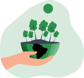

Replate
Food Donations are easier than ever with Replate

Reduce food waste

Reduce hunger

Easy-to-use app
About Replate
Many businesses have leftover food at the end of the day. Replate is an easy to use app that lets you effortlessly have those extras picked up by a volunteer of one of our worthy partner non-profit organizations and donated. Choose a convenient time and a volunteer will show up and take your extras to a predetermined place of need.